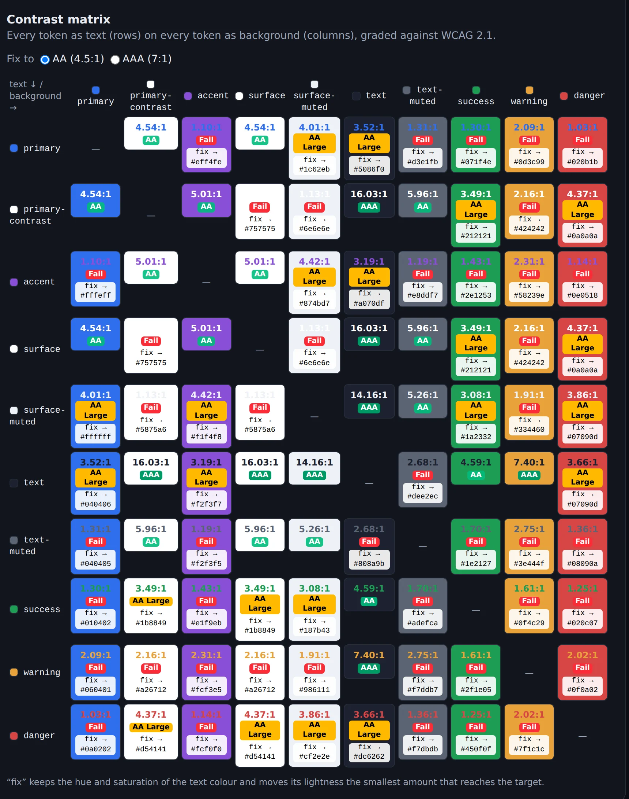
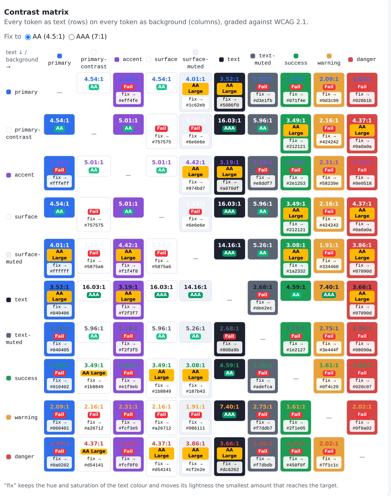
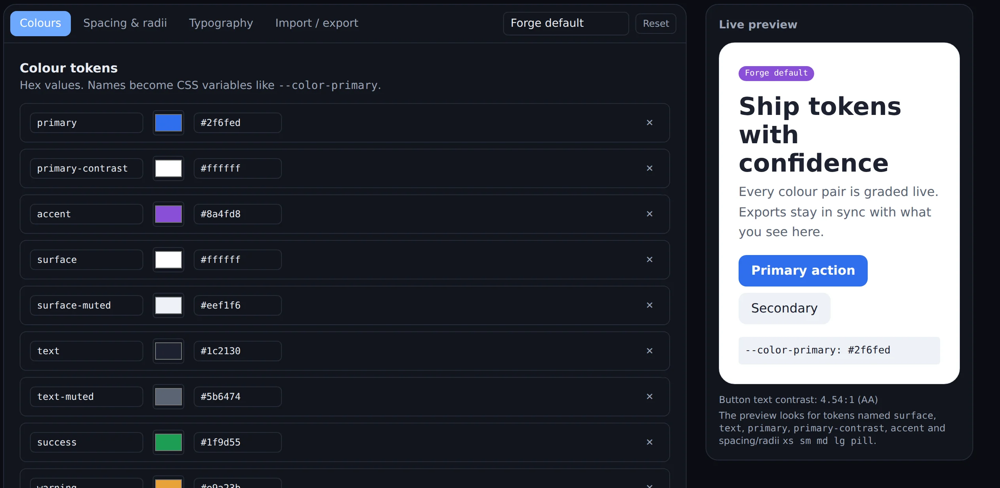
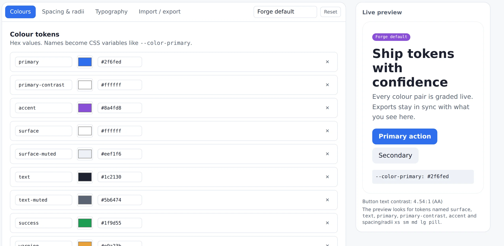

Most colour tools check one pair at a time: pick a text colour, pick a background, read the ratio. But a real interface eventually puts every colour on every other colour: a warning badge on a muted card, a link inside a success banner, the brand blue on a grey surface. Those are exactly the combinations nobody thinks to test.
I worked in design for about ten years before moving into engineering. token-forge sits right where those two meet: it takes the checking that is easy to skip by hand and makes it impossible to miss.
01The problem in numbers
The sample palette that ships with the app has ten colours: a primary blue, an accent purple, two surfaces, two text greys, and success, warning and danger. Ten colours as text on ten colours as background gives 90 combinations once you leave out each colour on itself.
Almost half. And that is a palette that looks perfectly reasonable on a moodboard. Checking those pairs one by one is tedious enough that, in practice, people don't.
02The idea: see everything at once
The heart of token-forge is a contrast matrix. Every colour token appears as text in a row and as background in a column, and each cell shows the exact ratio and its WCAG grade: AAA, AA, AA Large or Fail. Change a hex value and the whole matrix updates live.


The matrix catches the combinations nobody thought to test.
03A fix a designer would accept
Finding failures is only half the job. The easy fix is "just use black", and no designer will accept that, because it throws away the colour they chose. So token-forge keeps the hue and saturation of the text colour and changes only its lightness, by the smallest amount that reaches the target.
darker by 22%
Here is the sample palette's warning orange as text on white. It fails at 2.16:1. One click on its cell suggests a deeper orange from the same family that passes AA at 4.68:1. You can aim for AA (4.5:1) or the stricter AAA (7:1).
If no lightness of that hue can ever reach the target, for example two mid-greys that are simply too close, the tool says so instead of quietly inventing a different colour. I would rather be honest than clever there.
04More than colour
Colours are the headline, but a design system is more than a palette. token-forge also manages spacing and corner radii, and builds a modular type scale from a base size and a musical ratio (minor third, perfect fourth, golden ratio and others), from xs up to 9xl. A live preview shows the tokens on real UI while you edit.


When the set is ready, it exports to whatever the project uses: CSS custom properties, a Tailwind v4 @theme block, SCSS variables and maps, the W3C Design Tokens (DTCG) draft format, or plain JSON. The same tokens you checked are the ones that ship.
05Decisions I made, and why
- Lightness-only fixes. A suggestion that changes the hue is a different colour, not a fix. Keeping hue and saturation means the brand survives the accessibility pass.
- Pure, tested colour maths. All the calculations are plain functions with unit tests against WCAG reference values. For example,
#767676on white must come out at 4.54:1, the well-known grey that just passes AA. - Tests that use the app like a person. Component tests type a failing colour, watch the cell turn to Fail, click fix, and watch it pass.
- Imports that explain themselves. Importing a token file is validated, and errors point to the exact field that is wrong, in plain words.
- Accessible by default. Keyboard-friendly tabs, labelled inputs and a dark mode. A contrast tool that isn't accessible would be a strange thing to ship.
06Known limits
Contrast is measured with WCAG 2.1. The newer APCA method, proposed for WCAG 3, is not implemented. The DTCG export follows the community draft, which has changed shape over time, so it is worth checking against the tool you feed it into. And the fix only moves lightness, by design.
Try it or read the code
Open source under the MIT licence. It runs locally with Node:
git clone https://github.com/Rodzman/token-forge cd token-forge && npm install && npm run dev